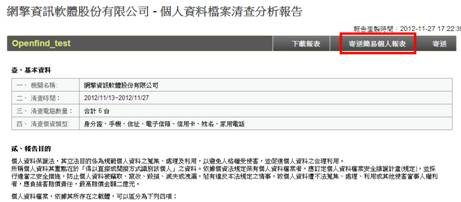
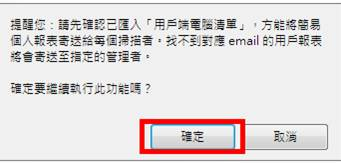

管理者需要將個人報表寄送每個盤點對象時，請依照下列步驟進行操作：
（1）在報表管理頁面中，點擊報表名稱進入報表頁面。
（2）點選右上方的「寄送簡易個人報表」。

（3）系統會跳出提示訊息，提醒您所有的個人報表，將依照您在用戶端電腦清單所輸入的資料進行寄送，按下確定後就會開始進行寄送。（用戶端電腦清單請參考＜如何匯入用戶端清單？ ＞）
註：若沒有輸入用戶端清單，則會依照使用者盤點時所輸入的Email 信箱(請參考<用戶端操作說明 ＞>章節)，若沒有輸入用戶端清單又沒有輸入Email，例如透過無介面版用戶端程式，則該報表會寄送到管理者信箱中。
